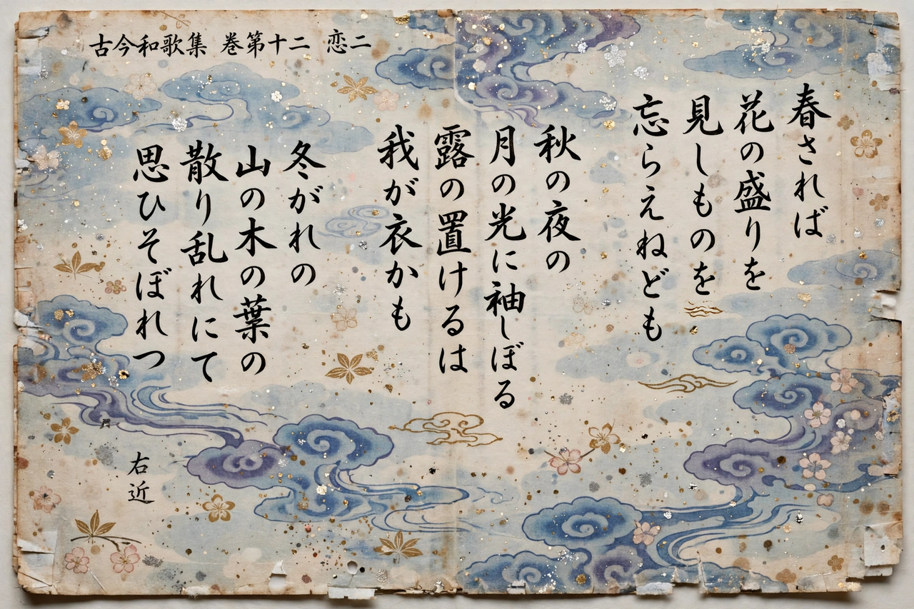

The Kokin Wakashū (Japanese: 古今和歌集, "Collection of Japanese Poems of Ancient and Modern Times"), usually shortened to Kokinshū, is the first of the imperially commissioned anthologies of Japanese waka poetry. Ordered by Emperor Daigo and completed around AD 905 (with presentation traditionally dated to 905 or c. 914), it contains some 1,100 poems in twenty books and established the canons of court poetry — its topics, diction, and associative arrangement — for the next thousand years. Its prefaces, one in Japanese by Ki no Tsurayuki and one in Chinese by Ki no Yoshimochi, are foundational documents of Japanese literary criticism.
| Kokin Wakashū | |
|---|---|
 Manuscript of the Kokinshū | |
| Commissioned by | Emperor Daigo |
| Completed | c. AD 905, early Heian period |
| Contents | 20 books; about 1,111 poems |
| Compilers | Ki no Tsurayuki, Ki no Tomonori, Ōshikōchi no Mitsune, Mibu no Tadamine |
| Language | Japanese, written in kana |
Emperor Daigo ordered the collection in 905 to demonstrate that native Japanese poetry stood equal to Chinese verse. Four courtier-poets, led by Ki no Tsurayuki, selected poems from the age of the Man'yōshū down to their own time, drawing on older collections and contemporary composition. Unlike the Man'yōshū, nearly all the poems are tanka; long poems virtually disappear. The compilers — all men — posed in the preface as representatives of a tradition they largely defined, and their choices canonized poets such as Ariwara no Narihira, Ono no Komachi, and the priest-poets Henjō and Kisen, later counted among the Six Poetic Immortals.
The twenty books are organized by topic: six books of seasonal poems (spring, summer, autumn, winter), five of love poems, and books of travel, parting, congratulations, laments, names of things, miscellaneous forms, and Shinto and Buddhist verse. Within the seasonal and love books, poems are arranged in a subtle associative and temporal progression — spring unfolding from the last snows to falling cherry blossoms, a love affair from first longing to abandonment — a technique of arrangement (rensō) that became a hallmark of Japanese anthology-making and linked verse.
Tsurayuki's Japanese preface (kanajo) famously declares that "the poetry of Japan has its roots in the human heart" and describes poetry as moving heaven and earth and stirring the spirits without effort. It classifies poems into six styles and offers pointed evaluations of earlier poets. Written in hiragana — then considered a "women's hand" — the preface is also one of the earliest masterworks of Japanese prose, by the same Tsurayuki who wrote the Tosa Diary. The Kokinshū's aesthetic ideals — elegance, subtle indirection, wordplay through pivot-words (kakekotoba) and associated words (engo) — defined uta as the central art of the Heian court.
The Kokinshū was the first of twenty-one imperial anthologies (Nijūichidaishū), and memorizing it became essential court education; its poems permeate The Tale of Genji, classical drama, and the later renga and haiku traditions. Although later ages sometimes found its wit over-refined, its influence on the Japanese language and imagination is incalculable.
From Wikipedia, the free encyclopedia (recreated from memory).